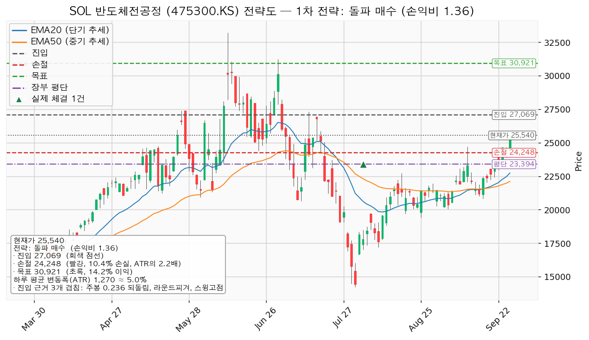
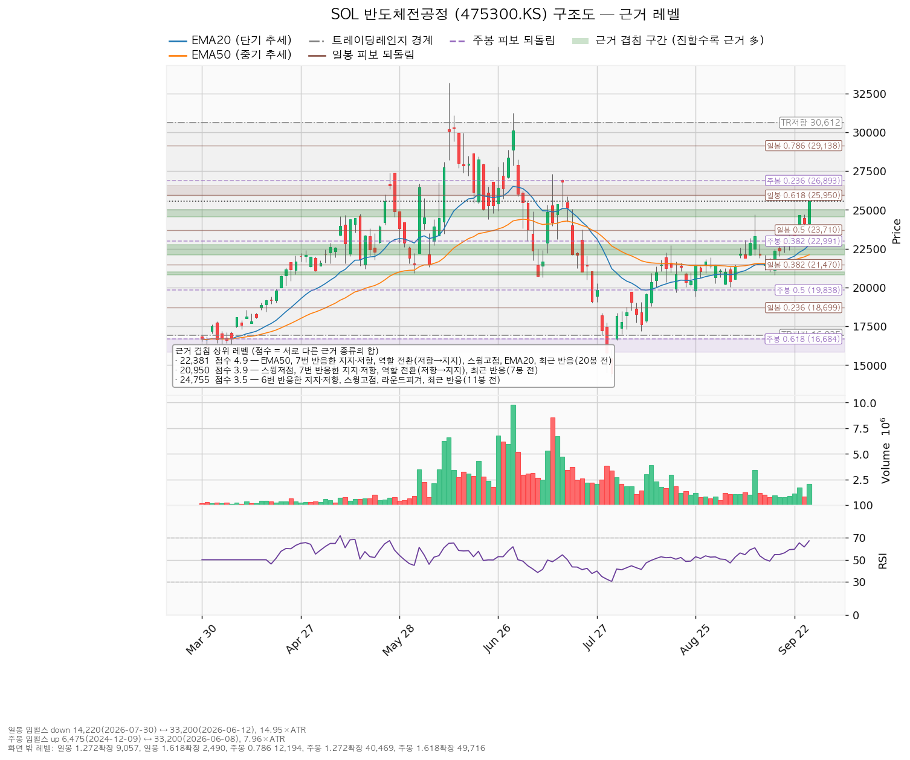
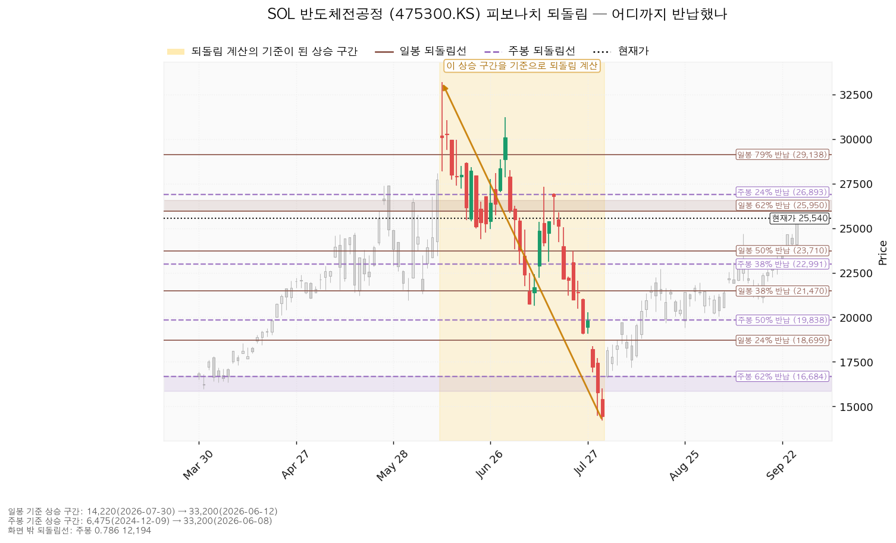
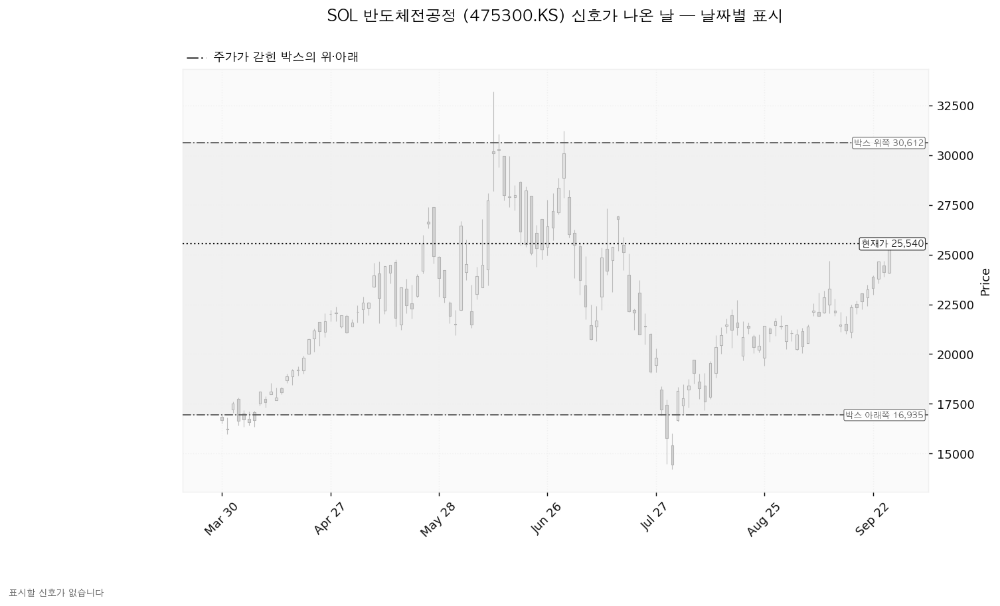

SOL 반도체전공정 (475300.KS)은 웨이퍼에 회로를 새기는 전공정 단계의 국내 반도체 장비·소재 기업에 투자하는 상장지수펀드입니다.
| 이름 | 가격 | 현재가 25,540원 대비 | 판정 방식 | 조치 |
|---|---|---|---|---|
| 회복선 | 27,069원 | +5.99% (1.20 ATR) | 일봉 종가 위 마감 | 추가 매수 144주 |
| 집행 손절 | 24,248원 | -5.06% (1.02 ATR) | 저가 터치 — 보유 350주에 지금 유효 | 전량 매도 (손절) |
| 관망 종료 기준 | 24,565원 | -3.82% | 일봉 종가 아래 마감 | 매수 계획 종료 — 새 리포트 대기 (보유분은 그대로) |
| 확인선 | 30,612원 | +19.86% | 일봉 종가 돌파 후 되돌림 지지 | 상승 확정 → 새 셋업 |
| 폐기선 | 16,935원 | -33.69% (6.78 ATR) | 이탈 후 3거래일 내 회복 실패, 또는 그 전에 15,665원 아래 종가 + 반등에서 저항 확인 | 실무상 작동하지 않음 |
코스피 6,865가 200일 이동평균 6,282 위(+9.28%)라 신규 진입이 가능한 국면입니다.
| 항목 | 값 |
|---|---|
| 셋업 | 돌파 매수 — 모멘텀(저항을 넘으면 그 방향이 이어진다는 전제), 자주 틀리고 소수가 크게 맞는 유형 |
| 진입 | 27,069원 일봉 종가 돌파 — 주봉 0.236 되돌림 + 라운드피겨 + 스윙고점(7/13 27,315원) 겹침 |
| 집행 손절 | 24,248원 — 손절 폭 2,822원(2.22 ATR, -10.42%) |
| 손절 근거 | 6번 반응한 가격대 24,565~25,000원 바로 아래 |
| 목표 | 30,921원에서 전량 매도 (목표 도달) — 박스 상단 + 스윙고점(7/01 31,230원) |
| 손익비 | `1:1.36` (손절 2.22 ATR) — 손절이 이미 겹침 구간 아래 구조적 자리라 구조적 손절 기준도 같은 값 |
| 구조 증명도 | 돌파 확인형 — 저항을 종가로 넘긴 뒤 진입해 진입가는 불리하나 구조가 먼저 증명됩니다 |
대표로 고른 이유: 손익비 1.36 × 돌파 확인형 × 세 근거 겹침이며, 되돌림 매수 후보(손익비 `1:1.11`, 선취형)보다 손익비와 증명도가 모두 높습니다. 상대강도·거래량 배수 1.2배(지수 대비 20일 +18.20%, 상대강도선 신고가, 거래량 1.77배)가 곱해졌지만 배수를 빼도 순서는 같습니다. 현재가 부근 지지 확인 매수는 손익비 `1:0.53`이라 보류입니다. 모멘텀 전제지만 집행은 30,921원 전량 매도, 트레일링 없음이며 돌파 이후는 새 셋업으로 잡습니다 — 분할 청산(28,000원 절반 익절 후 본전 손절)은 전 구간 손익비를 `1:0.85`, 하한을 `1:0.17`로 낮춥니다. 확인선 30,612원과 목표 30,921원은 같은 저항 구간이며, 여기서 막히면 30,921원 전량 매도, 종가로 넘기면 상승 확정으로 새 셋업을 냅니다. 계획 진입가 27,069원은 평단 23,394원 위라 추가 매수입니다.

| 단계 | 트리거 | 행동 |
|---|---|---|
| 1 관찰 | 진입 뒤 일봉 종가가 27,069원 아래로 마감 | 신규 진입만 중단. 되돌아 올라오면 속임수 하락일 수 있어 무효가 아닙니다 |
| 2 경고 | 이탈 후 3거래일 안에 27,069원을 종가로 회복하지 못함, 또는 그 전에 일봉 종가가 25,800원 아래로 마감 — 둘 중 먼저 오는 쪽 | 추가분 비중 축소, 반등에서 27,069원 반응 확인 |
| 3 무효 | 반등이 27,069원에서 막히고 그 아래로 되밀림 | 추가분 전량 매도 (시나리오 폐기), 새 구조까지 관망 |
집행 손절 24,248원은 판정이 몇 단계에 있든 별도로 작동하며, 장중 일시 이탈은 어느 단계에도 해당하지 않습니다. 논지 무효화: 폐기선이 멀어 가격 대신 전방 고객사 실적으로 겁니다 — SK하이닉스(10/27)·삼성전자(10/28) 실적에서 2027년 설비투자가 축소로 제시되면 보유분 전량 매도 (시나리오 폐기)를 검토합니다.
상승 전환 — 27,069원 종가 회복·지지 뒤 30,612원 종가 돌파. 27,069원에서 144주 추가, 30,921원에서 전량 매도 (목표 도달), 30,612원 종가 돌파는 새 셋업으로 다시 잡습니다.
횡보 지속 — 16,935원을 지키며 30,612원 아래 박스 유지. 매물을 소화하는 국면이며 부정적 신호가 아닙니다. 추적할 것: 지지 재시험 때 매도 거래량 감소, 저점 절상 지속(현재 절상), 상승봉 대 하락봉 거래량비(현재 1.13).
시나리오 폐기 — 16,935원 이탈 후 3거래일 내 회복 실패 또는 15,665원 아래 종가, 그리고 반등에서 16,935원이 저항으로 확인. 재분산이었다는 뜻이며 새 박스가 만들어질 때까지 관망합니다.
| 가격대 | 겹치는 근거 |
|---|---|
| 30,612~31,230원 | 박스 상단 · 스윙고점 — 확인선·목표 |
| 26,893~27,315원 | 주봉 0.236 되돌림 · 라운드피겨 · 스윙고점 — 회복선 |
| 24,565~25,000원 | 6번 반응한 가격 · 스윙고점 · 라운드피겨 · 11봉 전 반응 — 오늘 돌파, 손절 근거 |
| 22,107~22,739원 | 20일선 · 50일선 · 7번 반응한 가격(저항→지지 전환) · 스윙고점 |
박스는 조회된 일봉 635개 중 최근 90봉으로 잡았고 16,935~30,612원에 가격의 97.8%가 담깁니다(40봉 창은 72.5%로 불성립). 직전 90봉 구간(13,025~20,543원)과 가격대가 겹쳐 같은 횡보의 연장입니다. 박스 안쪽은 매집 우위 — 저점 절상, 상승봉 거래량이 하락봉의 1.13배입니다. 지지 테스트는 7/30 14,220원(거래량 0.92배) 한 번뿐이라 테스트 거래량 추세는 나오지 않았습니다.

일봉 되돌림은 6/12 33,200원 → 7/30 14,220원 하락 기준이며 현재가는 0.5선 23,710원과 0.618선 25,950원 사이입니다. 주봉은 2024-12-09 6,475원 → 2026-06-08 33,200원 상승 기준이고, 0.236선 26,893원이 회복선 구간에 들어 있습니다.

이 박스 구간에서 속임수 하락·거짓 돌파·강세·약세 신호는 하나도 잡히지 않아 신호일 차트에 표시된 캔들이 없습니다. 상승 진행 국면 후보는 추세와 이평 정배열로 붙은 이름이며 신호로 뒷받침된 판정이 아닙니다.

상장지수펀드라 기업 재무 조회가 "재무 자료 없음"으로 실패해 배수·목표주가 분포·이익 추정치 방향·현금흐름·상승 여력 분해 다섯 항목 모두 산출되지 않았습니다. 판단은 가격 구조와 상대강도에만 기댑니다 — 코스피 대비 20일 +18.2%, 60일 +2.16%, 120일 +22.23%, 가중 초과수익 +14.4%(가중치 0.45/0.30/0.25)입니다.
| 날짜 | 이벤트 | 왜 보는가 |
|---|---|---|
| 2026-10-27 | SK하이닉스 실적 | 전공정 장비·소재 수주의 전방 설비투자 방향 |
| 2026-10-28 | 삼성전자 실적 · FOMC 금리 결정 | 같은 이유 · 성장 업종 배수 |
| — | 펀드 자체 실적 없음 · 그 이후 분기 역풍 | 확인할 자료가 없습니다 |
계좌 1%(1,394,984원)를 손절 폭 2,822원으로 나누면 총 494주·13,372,234원(계좌의 9.59%)으로 13% 상한 안이며, 보유 350주를 빼면 추가 매수는 144주·3,897,979원입니다. 반도체 테마는 8.18%에서 10.98%로, 35% 한도 안입니다. 하루 평균 변동폭 1,270원은 주가의 4.97%로 8% 아래이고 손절 폭이 그 2.22배라 도구 적합성은 문제없습니다. 다만 보유 350주 기준으로는 손절이 현재가에서 1.02 ATR 아래라 하루 변동만으로도 닿을 수 있습니다.
최종 판정: 보유 350주 유지, 27,069원 종가 돌파 시 144주 추가 매수, 손익비 `1:1.36`, 조건 점검 9/9 통과. 현재가 25,540원은 진입가 아래라 오늘 사지 않습니다.
ATR: 하루 평균 변동폭. 되돌림선(피보나치): 앞선 상승·하락의 일정 비율만큼 값이 되돌아오는 자리. 손익비: 감수하는 손실 대비 노리는 이익의 비율. 상대강도선: 종목 가격을 지수로 나눈 선.